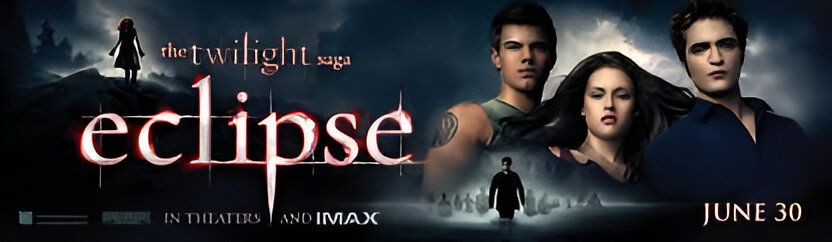
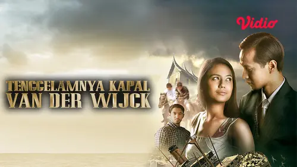

Novel Favorit
Di posting, januari 01 2025

The Twilight Saga adalah serangkaian novel karya Stephenie Meyer yang
mengisahkan tentang percintaan antara seorang remaja, Bella Swan, dan
vampir bernama Edward Cullen. Terdiri dari empat buku, cerita dimulai
dengan Twilight (2005), di mana Bella pindah ke Forks, Washington, dan
jatuh cinta dengan Edward, yang memiliki rahasia besar sebagai vampir.
Ketegangan muncul saat Bella terjebak dalam dunia vampir yang
berbahaya. Buku kedua, New Moon (2006), menggambarkan Edward yang
meninggalkan Bella demi melindunginya, menyebabkan Bella terjatuh
dalam depresi dan menemukan kenyamanan dalam persahabatan dengan Jacob
Black, yang ternyata adalah seorang werewolf. Di Eclipse (2007),
hubungan Bella dan Edward menghadapi tantangan baru ketika musuh lama
kembali, memaksa Bella untuk memilih antara cinta vampir dan
persahabatan dengan Jacob. Akhirnya, Breaking Dawn (2008) menceritakan
pernikahan Bella dan Edward serta konsekuensi dari keputusan mereka,
termasuk transformasi Bella menjadi vampir dan tantangan baru yang
melibatkan keluarga Cullen dan ancaman dari Volturi, para penguasa
dunia vampir. Tema utama dari saga ini mencakup cinta dan pengorbanan,
identitas dan pertumbuhan, serta konflik antara berbagai kelompok
supernatural. The Twilight Saga telah menjadi fenomena budaya,
menghasilkan film adaptasi yang sukses dan membangun basis penggemar
yang besar, sekaligus memicu diskusi tentang tema cinta, pengorbanan,
dan identitas dalam konteks remaja.
Novel Favorit
Di posting, Juni 21 2024

"Tenggelamnya Kapal Van Der Wijck" adalah sebuah novel yang ditulis
oleh Hamka, mengisahkan perjalanan cinta yang tragis antara Zainuddin
dan Hayati. Berlatar belakang masyarakat Minangkabau, novel ini
menggali konflik antara cinta dan tradisi, di mana Zainuddin, seorang
pemuda dengan darah campuran, berjuang melawan stigma sosial dan
penolakan dari keluarga Hayati. Cerita dimulai dengan pertemuan mereka
yang romantis, namun segera terhalang oleh perbedaan status sosial dan
tekanan adat. Melalui alur yang penuh emosi dan deskripsi yang
mendalam, Hamka mengeksplorasi tema pengorbanan, kesedihan, dan
ketidakadilan, menjadikan novel ini tidak hanya sebagai kisah cinta,
tetapi juga sebagai cermin realitas sosial yang menyentuh hati
pembaca.